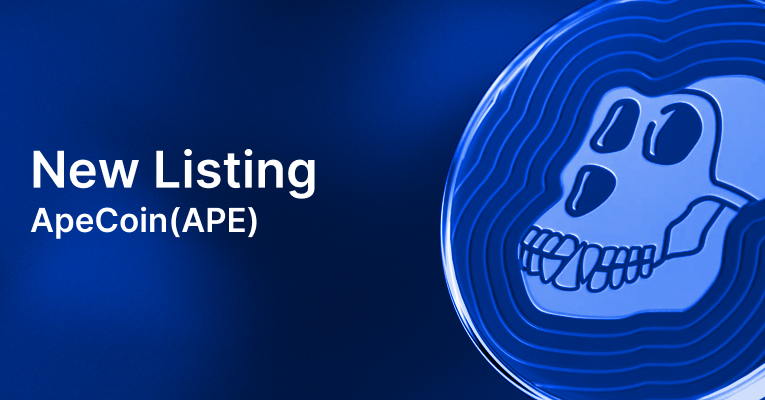

Account Security Guide
 This guide was created to prevent unauthorized access to your account, as well as to inform users about how to protect your profile.2FA and backup code
Enabling two-factor authentication (2FA) increases the security of your Monowork.com Account, as well as coins/tokens stored on It. This method of account protection is called two-factor protection, because it is the second security barrier after the password to log in to the account. This really increases your security, because in addition to the username and password, the attacker will need to enter a 2FA-code. In the event of a hacking attempt, an attacker can reset your password through your e-mail address that you specified during registration, if it was hacked. However, even if the attacker has a username and password from your Monowork.com acc
Password
Several rules for creating a password:
- The password has never been used before;
- The minimum length is 6 characters;
- Use upper and lower case;
- Use special characters and numbers. vRemember that support staff will never ask for your password.
HTTP(S)
Check the "S" after "http" in the browser's address bar. If there is no "S", the connection is not secure. It can lead to loss of access to the account and loss of funds. A green lock near the address informs the user about the security of the visited page. If there is no lock, you should pay special attention to the site name in the address bar or do not use it at all, because the http Protocol is not secure. It is safe to use websites with https Protocol only.Checking the SSL certificate
To check the SSL certificate, follow the instructions. Click on the certificate details and make sure that you are on the official website.